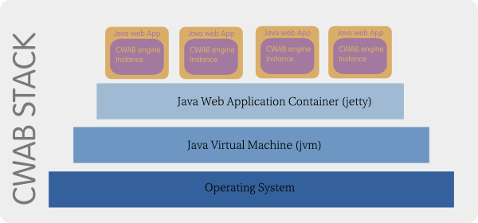

HiveMind is a modern web-based web application development platform. It combines traditional IDE features with an innovative middle-ware layer that makes building web applications simple and fun. HiveMind is built atop the Java platform and the diagram below shows how it fits into the Java stack.

The HiveMind middle-ware layer is a light-weight execution engine that executes the artifacts created via the HiveMind developer environment application. These artifacts are called "cruds". Foundamentally, a crud represents an encapsulation of concerns usually associated with running web applications. In the stack diagram above, the HiveMind middle-ware is the crud execution engine instance hosted inside a Java web application, this instance is a POJO singleton. Specifically a crud has the following structure.
A crud construct is made of the the following components:
Security definitions
Parameters
Pre Execution handlers
Primary action
Post Execution handlers
This basic construct completely describes a crud and how to execute a particular crud. For instance assuming a crud represents a script in some programming language to perform a certain database action.
The crud is able to describe security restrictions associated with this action.
The crud is able to describe all parameters associated with this action (for instance say account number)
The crud is able to specify which actions must be completed before this action (these would be invoking references to other cruds).
The crud should describe the primary action in the form of an executable logic (run script, db action, upload file, send email..etc).
The crud should specify any ex-post actions that must be completed after the primary action
Cruds exist in two forms, definition form and executable form. Crud definitions are basically the source form of a crud, you “bake” a crud definition to make it into the JSON formatted executable crud file. These executables are then executed by the crud engine. When you deploy applications on the HiveMind platform, crud files along with other assets are what you'll deploy as your application.
From HiveMind application tab, you can refresh an executable crud to update it with the latest changes to its definition. In general whenever you alter a crud definition, an alert shows up with a list of all crud executables derived from this definition that may have become staled as a result of the update.
Crud definitions are stored in a database called the crudbase. The crudbase mirrors the design concerns outlined in the crud structure/design principle section. The following tables are present in the crudbase:
In addition to the crud definition tables, there are the following:
Note that the crudbase is only to support application development. This database isn’t useful for executing cruds. In other words when a crud application is deployed to production, the crudbase is not a part of the application.
The HiveMind environment has a taxonomy structure around the crudbase. This taxonomy allows for browsing the crudbase in a manner similar to browsing a file system. The taxonomy has two types of nodes, category nodes and crud nodes. Category nodes can contain other category nodes and crud nodes.
The HiveMind middle-ware engine has an argument map that is used for propagating arguments across crud calls. Think of the argument map as similar to the HTTP_POST/GET maps in languages such as php. There are various modes of argument propagation :
The argument map is available to ScriptExecutor cruds as an object named arguments, it is natively an instance of java.util.HashMap.
"Final" parameters are parameters whose values cannot be overwritten by incoming argument maps.
crudzilla_empty_string is available for initializing parameter values with empty string, otherwise the value is null. The usage syntax for this parameter is @crudzilla_empty_string or :crudzilla_empty_string
Additionally, an existing variable on the argument map can be referenced as the value for a subsequent parameter by using [@|:]<variable-name> syntax as the default value for the parameter you want to assign the value to.
Crud applications are plain old J2EE web applications. This means your crud application would be deployed into your environment just like any other application. There is absolutely nothing different about how you deploy a regular Java web application and how you deploy a crud application on an app-server. Ok, now you are wondering, so I have to redeploy my apps everytime I make a tiny change? No!!!
What the HiveMind platform allows, is for the application deployment to be further abstracted. Similar to how you can drop jsp files into a running application (war file), you can drop cruds into your crud application directory without actually re-deploying your war file. The war file only needs to be redeployed when a jar component changes, or you need to change your crud application directory. Both of these activities occur sparingly during the development of a web application, the hassle of re-deploying war files is significantly minimized.
The applications you build on HiveMind are POJWAs (Plain Old Java Web Applications)
You need to specify the base directory of your application assets including cruds. There are varous directories that can be set. By Default these are set to the asset directory sub-directory that your application is created in. You should only need to set most of these for production deployment, not during development.
The developer studio application, which is the application that you use to build your HiveMind applications, is destributed as an integration of jetty container and the derby embeded database, it contains the following important directories:
The developer studio's asset directory is crudzilla-apps/crudzilla, this directory is the developer workspace that holds all applications. The developer studio application's base executable resource directory is crudzilla-apps/crudzilla/com/crudzilla/CAB, in other words, the platform parameters
all point to this directory.
Note: The app-home servlet init parameter can be set as an absolute path or as a path relative to the crudzilla-apps directory.
There are six types of cruds available on the HiveMind platform. Below you'll find a detailed explanation of all of them.
ScriptExecutor as the name suggests is a crud type for running executable code. The HiveMind platform supports a set of jvm targeted languages including Groovy, Jexl, Javascript, Clojure, Jruby and Jython. Interesting enough, the HiveMind platform doesn’t directly support coding in the Java language! The Java language is compiled and is expected to be used for developing components in a traditional IDE. For instance a Java component is used to implement the EmailSender crud type that does the actual sending of email. It is however possible to code Java in HiveMind and use ant to build and deploy it as part of your app’s war.
ScriptExecutor cruds have a number of native objects available to scripts.
crud.[add(<parameter-name>,<parameter-value>).]*call(<crud-path>[,<arguments-partial-clone>]);
HiveMind supports html templating via the Velocity engine. Templates are a type of ScriptExecutor. Templates support a number platform parameters:
These parameters can be set globally at the engine level or individually on a template crud.
DataStatement crud type is responsible for supporting all sql based database interactions. It is what would be used for doing C.R.U.D operations in a web application. The DataStatement crud type is a vastly superior approach for doing C.R.U.D than existing approaches including ORM. DataStatements facilitate ease of use that exceeds that of the ORM approach while effortlessly granting a developer the full power of SQL.
DataStatements are not only the easiest way to do C.R.U.D operations, they are also robust and support safe database interactions. Some points of note about DataStatements include:
A reference can be set to a ScriptExecutor which can serve as a custom resultset processor. This is an advanced capability which gives the developer full control over the processing of the resultset from an executed query. The resultset is available as a variable called crudzilla_datastatement_resultset. This is a JDBC result object type.
DataStatements also support the platform parameter crudzillJavaLangClass. Set this to the fully qualified Java class name if you want the resulting data to be converted to a Java bean of the specified class type.
The platform parameter crudzilla_default_datasource should be set as part of crudzilla-app-settings/system-settings to specify a default data source for newly created DataStatements. This would be automatically filled in when ever a new DataStatement crud is created. Most business applications only have a single data source, so this would save the developer a few extra clicks.
The platform parameter crudzillaResultSetFormat is available for use with DataStatements. The value can be one of the following:
DataStatements support type hinting, this is useful for RDMSs that have strict type requirements for prepared statement parameters. To specify a type simply enclose the type in parenthesis following the parameter name. The syntax is as follows: :<PARAMETER-NAME>(<SQL/Java-Type>)
When a type hint is supplied with a specified parameter, the following additional parameters may be supplied.
For types: BINARY, VARBINARY, LONGVARBINARY,CLOB,BLOB
Base64
crudzilla_base64_format_<PARAMETER-NAME>_linelength
crudzilla_base64_format_<PARAMETER-NAME>_lineseparator
crudzilla_base64_format_<PARAMETER-NAME>_urlsafe
Base32
crudzilla_base32_format_<PARAMETER-NAME>_linelength
crudzilla_base32_format_<PARAMETER-NAME>_lineseparator
crudzilla_base32_format_<PARAMETER-NAME>_urlsafe
Binary
Hex
crudzilla_hex_format_<PARAMETER-NAME>_charset
DATE
crudzilla_date_format_<PARAMETER-NAME>
TIME
crudzilla_time_format_<PARAMETER-NAME>
TIMESTAMP
crudzilla_timestamp_format_<PARAMETER-NAME>
BLOB,CLOB
you may also upload files in place of data for these types, so for instance you may call a datastament in a multipart http request that includes an image file to be stored in a blob.
The types supported are either Java types or SQL types, in other words JDBC types.
Instantiators are easily one of the most useful crud types on the HiveMind platform. The Instantiator exposes the NVP Processing mechanism for general use by applications. Instead of the parameterization mechanism only serving cruds, it is exposed as a crud type of its own with Instantiators. What this facilitates is an incredibly flexible and versatile facility for creating data structures. Data structures constructed via an Instantiator can get their data from any number of sources including from other crud types such as DataStatements or HttpConnectors.
You may now be wondering, well what can I use an Instantiator for, well the simple answer is: almost anything!
Instantiator crud types support the platform parameter crudzillJavaLangClass, the value can be the fully qualified class name for the resulting bean. It can also take the special values map for HashMap or list for ArrayList.
The default return value is a generic classless Java bean, however if the name is missing for all parameters, then the Instantiator return type is assumed to be a list. In all other ways, the Instantiator uses the parameterization mechanism as with the other crud types.
This crud type supports file uploads. It supports automated file naming and file unzipping, specifying upload directory. It relies on the apache commons fileupload component. Again you write no code, just create a FileUploader crud type, configure it and you can do file uploads. The file uploader relies on the crudzilla_temp_upload_directory platform parameter. This parameter should be set as part of the crudzilla-app-settings/system-settings.
This crud type implements the apache smtp component. You can use it to connect to an stmp server and send emails. The email text itself needs to be generated from a velocity template. If you’ve ever had to configure your emails in text files or awkward database entries, you’ll smile when you have to send emails on HiveMind.
Even a platform such as rails which prides itself on making such task simple is simply no match for what HiveMind offers. To put simply, sending emails in a HiveMind application simply makes sense. Your email templates can be edited and previewed, so you know exactly what it looks like.
Because emails are velocity templates, you can incorporate logic and data into your emails easily, sending reports and customer account information becomes a trivial task.
Did I mention, no writing code?
This crud type supports connecting to external systems via http. Excellent for doing RESTful operations. You can use this to consume webservices and other types of integration. This crud type uses the apache commons http client components and supports all the options supported by that component. The component has several parameters with predefined values. This crud type depends on the platform parameter crudzilla_temp_upload_dir when request includes file upload.
postDataSourceType
method
authenticationType
HiveMind provides a simple way to run tests of your crud application. You can run numerous tests for different test cases.
The CEE maintains a cache for crud executables at runtime. When a crud is requested for the first time, if there is a cache miss in the crud cache then that crud is loaded from disked and cached. Subsequent requests for that crud will not reload the crud from disk but rather use the cached crud.
The HiveMind monitors the application directory for any changes to cruds and invalidates the currently cached version of an altered crud.
HiveMind needs to be configured via an Instantiator. HiveMind would look for a servlet init property called app-home that is assumed to point to the relative path of the application base directory, settings are stored in the instantiator crudzilla-app-settings/system-settings.ins. This would be executed and the data used to start the engine.
Database Table and Column pooling is an experimental technology introduced in HiveMind that allows for further abstraction of the database. The basic idea is to view database tables and columns as storage constructs as opposed to modeling constructs. Modeling is then facilitated in HiveMind via Instantiators. This technique allows for numerous data models to be mapped to a small pool of database tables and columns, as opposed to creating a table for every model.
This technique would be particularly useful for developing products that have third-party extensions/plugins. By using an approach where component developers know beforehand that there is a pool of database table and columns, data aware third-party components can be built and integrated with ease.
Column pooling works by assuming a database table exists with a pool of columns of various types. A flexible data model can then be constructed to map fields to available columns of appropriate type. The DataStatement crud type is capable of recognizing a data model reference and substituting the corresponding database table column in the compiled sql query.
There are of course obvious weaknesses associated with this approach, it should be used only where the benefits significantly exceeds the shortcomings.
Every crud definition can specify access restriction based on a user's identity. The identity is specificied by user-name and role. This approach to application security is transparent and makes security audit and enforcement a trivial task.